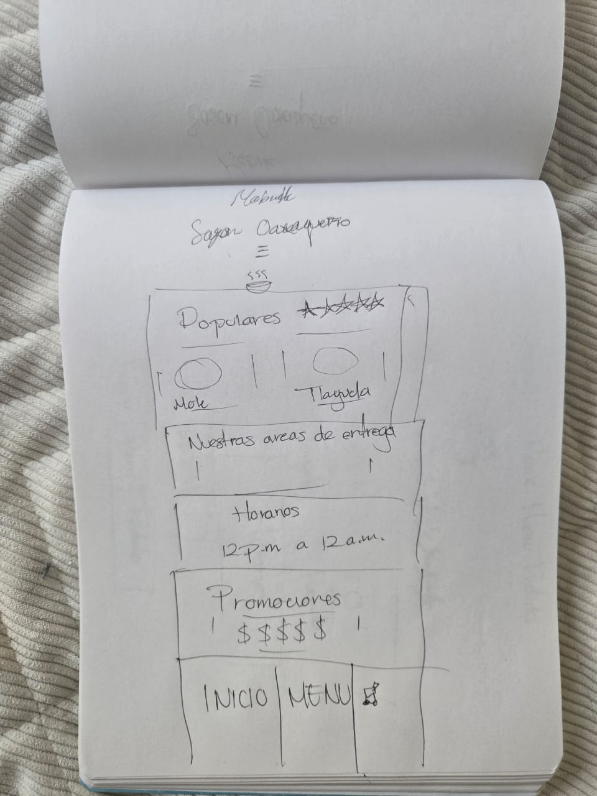
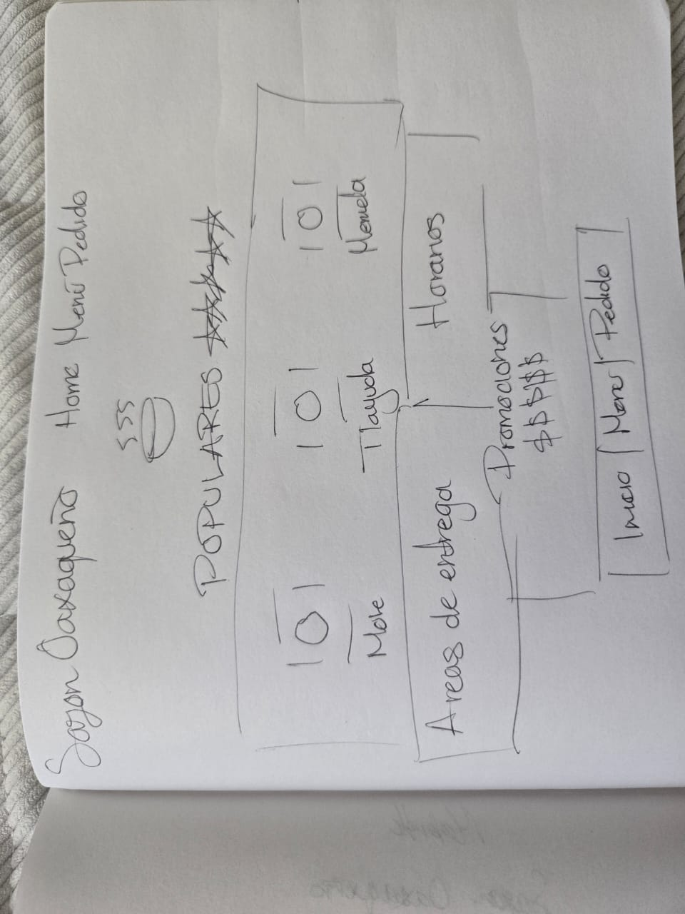

Site Name
Sazón Oaxaqueño
The name "Sazón Oaxaqueño" was selected because it represents the food and local identity of the business. The name communicates the idea of authentic Oaxacan flavor while being simple and easy for customers to remember.
Site Purpose
Sazón Oaxaqueño will provide an online ordering and local delivery platform for a food business. The website will allow customers to learn about the business, explore available menu items, view prices and descriptions, add food to a virtual cart, complete checkout, and track their delivery.
The site will include information about delivery areas, business hours, featured promotions, popular menu items, and the ordering process.
Scenarios
Scenario 1
What food items are available and how much does each item cost?
Scenario 2
Does Sazón Oaxaqueño deliver to my area and how long will my order take to arrive?
Scenario 3
How can I place an order and check the status of my delivery?
Color Scheme
The color scheme uses warm and natural colors inspired by food, freshness, and the identity of Oaxaca. The main colors are pastel green and blue, supported by a warm cream background and dark text.
Pastel Green
#A8C3A0
Used for accents, section highlights, borders, and supporting visual elements.
Blue
#3D6B8F
Used for headings, buttons, links, and important interactive elements.
Warm Cream
#F7F3E8
Used as the main page background to create a warm and comfortable appearance.
Dark Text
#263238
Used for paragraphs and other primary text to maintain readability.
Typography
Playfair Display
This font will be used for the main site title, section headings, and other important titles. It provides an elegant and distinctive appearance.
Lato
This font will be used for body text, menu descriptions, prices, buttons, navigation, and other general content. It provides a clean and readable appearance.
Wireframe
The wireframes show the structure and layout of the Sazón Oaxaqueño home page for both a small mobile viewport and a larger desktop or tablet viewport.
Small Viewport — Mobile

Large Viewport — Desktop / Tablet
